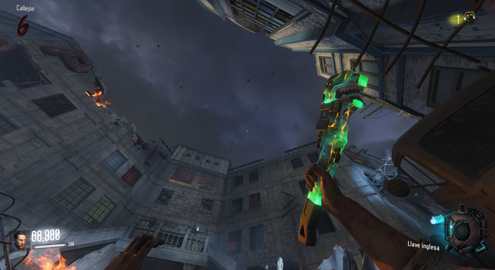
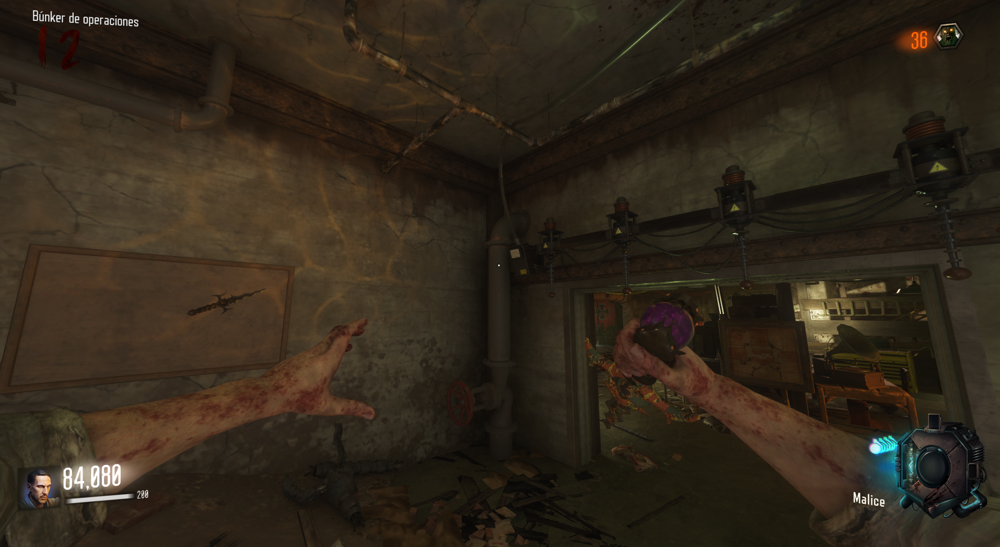
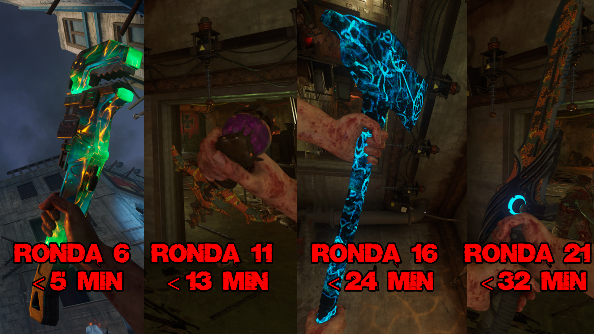

Contrareloj Armas (Gorod Krovi)

Para conseguir las armas tnedremos que pasar de ronda en el menor tiempo posible. Las rondas 5, 10, 15 y 20 deben de ser completadas en cierto tiempo.
Si lo hacemos bien, iremos a la entrada del búnker y en la pared podremos comprar el arma.

Estos son los tiempos y rondas para cada arma.
